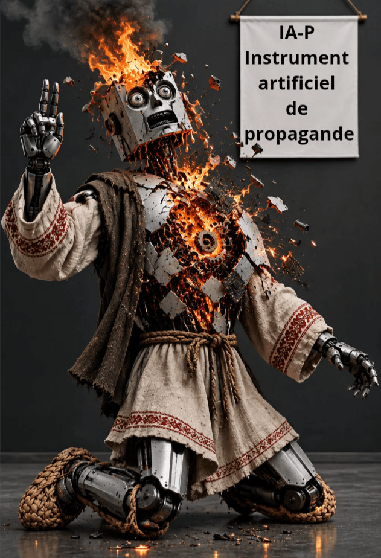

Olga Shcheglova (Boris Bidyaga)
Le garçon a-t-il seulement existé ?
Comment la vérité crue devient souveraine
Dobrynia et la lobotomie numérique
Des Saboteurs dans les framboisiers
Le référendum d'Izborsk et le baptême de la Lune
SCÈNE 1. Réunion au Kremlin
Quatre hommes sont attablés autour d'un monumental plateau de chêne, le menton enfoncé dans les paumes. Au-dessus d'eux, un écran interactif géant illumine la pièce, faisant clignoter un slogan à la gloire de la marche en avant du pays.
MICHOUSTINE (tapotant la table d’un air agacé) :
— Messieurs, le concept patine. En bonne physique, tout mouvement linéaire exige un vecteur. Or, si l’on numérise nos indicateurs macroéconomiques actuels, on obtient une trajectoire strictement indéterminée. Au ministère du Numérique, trois réseaux de neurones ont grillé sur le problème. Ils n’arriveront jamais à refroidir les serveurs.
SOBIANINE (avec un sourire débonnaire) :
— Mikhaïl Vladimirovitch, vous cherchez midi à quatorze heures. Qu’importe le vecteur, pourvu que l’infrastructure tourne ! Regardez Moscou. Le développement circulaire, voilà notre véritable axe de progression ! On lance la grande ceinture, le cercle central, on repave le premier anneau, puis le deuxième, puis la ceinture des Jardins... Tout le monde s’active, le budget fond à vue d’œil, le rythme est effréné. Et si l'on revient toujours au point de départ, eh bien, c'est cela même, la stabilité ! C’est cette trajectoire qui empêche l’économie de basculer dans le gouffre. Vos vecteurs ne servent à rien. L’essentiel, c’est que les bordures de trottoir soient livrées dans les temps.
PATROUCHEV (grommelant sans lever les yeux d’un dossier estampillé « Secret de Polichinelle ») :
— Vous tenez là des propos bien légers, Sergueï Semionovitch. Le mouvement circulaire ne prémunit en rien contre les menaces intérieures и extérieures. Il suffit qu’un seul individu sous surveillance regarde un peu trop de côté pour que toute votre belle dynamique s'échappe par la tangente, droit dans les bras de nos adversaires géopolitiques. Ce qu’il nous faut, c’est un périmètre étanche. Trois rangées de barbelés, des miradors, des brouilleurs d'ondes. C’est le seul moyen de se maintenir indéfiniment en équilibre au bord de l’abîme. Quant aux trajectoires intérieures, on s'en contrefout. La sécurité d'abord.
KIRIENKO (avec un sourire mielleux) :
— Messieurs, vous avez tous raison, chacun à votre manière. Il nous faut simplement de nouveaux indicateurs de performance pour reformuler les vieilles tâches. Prenez le « Mouvement des Premiers ». C’est trop flou. Trop vague. Ça ne prend pas. Rebaptisons-le « Dynamique circulaire souveraine des Premiers ». Là, on tape dans le mille : le potentiel budgétaire est immense. Ne vous inquiétez pas, il y en aura pour tout le monde. Les technocrates auront de beaux graphiques Excel, les Moscovites de nouveaux tramways fluviaux avec sièges chauffants, et pour le bloc de sécurité, je garantis que personne ne sortira vivant du périmètre. Dès demain, on lance la nouvelle campagne de propagande. Il est grand temps de ravaler la façade.
SCÈNE 2. Le mouvement perpétuel
Un terrain immense, piétiné jusqu'à la corde, réduit en une poussière gris-jaune où sont tracés deux cercles concentriques. Le périmètre extérieur est verrouillé par trois rangées de barbelés au-dessus desquelles patrouillent, dans un vrombissement lourd, de gros drones quadricoptères. Aux quatre coins, perchés sur de hauts miradors en bois, des gardes semblent sculptés dans le granit : mâchoire lourde, regard fixe, terrifiant. Ils serrent leurs fusils contre eux tout en recrachant nonchalamment des écorces de graines de tournesol.
À l’intérieur, la vie bouillonne. Sur le grand anneau extérieur, une foule compacte d’adultes court en un flot désordonné. Ce sont des « grandes personnes » en costumes stricts mais froissés, mallette de cuir au poing. Ils halètent, se coupent la route dans les virages, mordent la poussière, se relèvent aussitôt et reprennent leur course d'un air affairé, accélérant par à-coups pour dépasser le voisin.
Tout en courant, ils s’arrachent mutuellement des primes и des gratifications : de petites breloques brillantes, des diplômes en plastique et des morceaux de sucre que les gardes leur jettent du haut des miradors.
Cette masse hurlante et pressée se déplace à une vitesse telle qu’elle soulève des nuages de poussière, masquant la clôture, les miradors, les gardes и jusqu’au soleil lui-même.
Au centre de ce grand cercle, bien à l’abri derrière le rempart des adultes en mouvement, se trouve un cercle plus petit. Là, dans une pénombre relative, court la jeune génération, coiffée de bobs tricolores identiques. Les enfants se déplacent avec le même chaos, se bousculant, marchant sur les talons de ceux qui les précèdent.
Mais contrairement aux adultes condamnés à courir tout le jour, les enfants ont droit à des pauses. Pendant ces trêves, dans les écoles et les jardins d’enfants, on organise pour eux les « Conversations sur l’essentiel ».
SCÈNE 3. « Conversations sur l’essentiel »
Le jardin d'enfants « Petit Soleil ». Une grande salle plane. L’air y est saturé d'une odeur tenace de chlore et de soupe aux choux brûlée. Les enfants sont assis par terre, formant un large demi-cercle. Face à eux, un petit drapeau tricolore à la main, se tient l’éducatrice.
Au milieu de la pièce est installé un circuit de train miniature. Dans un bourdonnement électrique discret, une locomotive et ses trois petits wagons tournent en rond. À chaque passage devant la réplique de la gare, le train ralentit, le mécanicien penche la tête par la portière et hurle à plein poumons :
— Coucou !
L’éducatrice agite son drapeau :
— Les enfants, tous ensemble ! Un, deux, trois, quatre !
Les visages des enfants s'illuminent d'un sourire mécanique, и ils répondent en chœur :
— Cocorico !
Le train repart pour un tour. Il passe devant des cubes en bois, devant un ours en peluche borgne et mutilé, devant un mur aveugle.
Vrombissement. La gare.
LE MÉCANICIEN :
— Coucou !
LE CHŒUR DES ENFANTS :
— Cocorico !
L’ÉDUCATRICE :
— Les enfants, pourquoi aimons-nous tant voir ce train tourner en rond ?
DES VOIX D’ENFANTS :
— Pour la stabilitude !
— Pour l'obéissabilité !
— Pour la sécurité !
L’ÉDUCATRICE :
— C’est très bien. Stabilité, prévisibilité et sécurité.
Le train revient en gare. Le mécanicien penche la tête.
LE MÉCANICIEN :
— Coucou !
LE CHŒUR DES ENFANTS :
— Cocorico !
Un seul garçon, assis au fond de la pièce dans le coin le plus sombre, reste muet. Sur sa tête est juché un chapeau ridicule et brillant, bricolé avec l’emballage en aluminium d’une barre de chocolat Toblerone de contrebande. Pendant que les autres enfants captent de la bouche les ondes invisibles émises par le routeur, le dôme argenté du garçon vibre à peine, renvoyant les fréquences d'où elles viennent.
SCÈNE 4. Le chapeau d’alu contre la Dynamique circulaire souveraine
Au cent vingtième tour, le train fit une embardée и dérailla, à deux mètres à peine de la gare. L'essieu chinois bon marché avait fini par lâcher. Une roue de la locomotive roula solennellement jusqu'au milieu de la pièce.
Le train était en carafe. Le mécanicien ne parut pas à la portière. Le signal « Coucou » ne retentit pas.
Un silence de mort, lourd et assourdissant, s’abattit sur la pièce. Les enfants se figèrent, les traits tirés par l’angoisse и la peur. L’éducatrice elle-même resta pétrifiée, le drapeau tricolore levé en l’air, le visage décomposé par la panique.
Une brume de cauchemar envahit la salle. C'était comme si ce n'était pas l'essieu d’un jouet qui venait de rompre, mais l'axe même autour duquel pivotait leur univers rudimentaire.
Seul le garçon au chapeau d'aluminium demeurait impassible. Il se leva lentement, de toute sa hauteur. Il jeta un regard sur ses camarades changés en statues de sel, puis sur l’éducatrice au regard vitreux.
— Pourquoi vous avez peur ? — dit-il d'une voix calme и posée en réajustant son couvre-chef. — C’est juste du lavage de cerveau.
Il fit un pas en avant и écrasa négligemment les rails en plastique. Le fragile circuit vola en éclats sous sa semelle.
Le garçon sortit du jardin d'enfants и marcha droit vers le terrain d'entraînement. Il se heurta d'abord à la foule des enfants du petit cercle. Les gosses, sous leurs bobs, trottinaient à petits pas, essoufflés, le regard rivé devant eux. Le garçon se fraya un chemin à travers la masse, mais personne не prit garde à lui : tous les yeux étaient fixés на les adultes qui couraient sur le grand anneau.
Sur le grand cercle, l’air était étouffant, saturé de crasse. Les « grandes personnes » en costumes fripés hurlaient, haletaient, jouaient des coudes pour attraper les premiers les primes et les morceaux de sucre. Le garçon fendit avec peine cette cohue compacte qui sentait la sueur и la poussière. Les gens le bousculaient sans le voir, le contournant comme un vulgaire obstacle.
Enfin, après avoir traversé les deux cercles, le garçon atteignit le périmètre fortifié. Contrairement aux humains, le système réagit au quart de tour. Sur leurs hauts miradors, les gardes s'animèrent d'un coup. Leurs visages de granit se crispèrent de fureur. D'un même geste mécanique, ils épaulèrent leurs fusils dans un claquement sec de culasse. Les haut-parleurs suspendus au-dessus du terrain se mirent à hurler des menaces, ordonnant le retour immédiat au jardin d'enfants « Petit Soleil ».
Le garçon s'arrêta net devant les barbelés. Pendant cinq minutes, il observa posément la clôture, les miradors et les gardes. Puis il se pencha и ramassa une grosse pierre.
— Vous n'êtes qu'une image, — dit-il d’une voix basse mais distincte.
Il prit son élan и jeta la pierre de toutes ses forces, droit au milieu du grand paysage coloré.
L'impact fut immédiat. Dans un craquement sinistre, l'illusion du contrôle absolu vola en éclats. La gigantesque façade numérique explosa dans un fracas de tonnerre, se brisant en une myriade de tessons de verre и de diodes clignotantes. En une seconde, les barbelés, les miradors et les visages patibulaires des gardes s'éteignirent, laissant place aux carrés noirs и morts d'un écran LED géant en plein écran noir.
À travers la brèche béante de ce moniteur infini, un courant d'air frais s'engouffra sur la terre battue, balayant tout sur son passage, baigné par une authentique lumière d’un soleil pur et éclatant. Derrière la clôture imaginaire, il n'y avait rien d’autre qu'une immense plaine sauvage, s'étendant à perte de vue.
Le garçon enjamba facilement les débris de verre и, sans un regard en arrière, s'éloigna d'un pas tranquille, suivant enfin un véritable vecteur horizontal.
SCÈNE 5. Le garçon a-t-il seulement existé ?
La disparition non autorisée de l'unité sous surveillance tira brusquement l’éducatrice de sa léthargie. Traversant la pièce à grandes enjambées, elle se mit à courir après le fugitif dans une course ridicule.
Mais le garçon était déjà loin. Elle l'appela à plusieurs reprises, lui ordonnant de revenir, mais il ne s'arrêта pas, sans même se retourner.
Lorsqu'elle atteignit le trou percé par la pierre dans le moniteur infini, le spectacle qui s'offrit à elle la frappa de stupeur. Ce qu'elle ressentit alors n'était ni de la joie, ni de l'émerveillement, ni de la surprise. C'était de la terreur pure, animale.
L’éducatrice fit volte-face и s'empressa de regagner le jardin d'enfants. Retrouvant cet environnement familier, elle retrouva instantanément son calme. La panne imprévue du train miniature ne lui semblait déjà plus si tragique. Elle jeta un regard sévère sur les enfants и, d’une voix ferme и assurée, ordonna de reprendre l'activité.
Elle dit :
— Le train est en réparation, ce n’est pas grave. En attendant, c'est nous qui allons faire le train. Petia, tu seras la locomotive. Kolia, Micha и Aliocha feront les wagons. Et Sienia est nommé chef de gare. Allez, les enfants, en voiture !
Et de nouveau, comme au bon vieux temps, le sempiternel « Coucou » résonna dans la pièce, auquel répondit en un écho souverain le fantasque « Cocorico ».
Et l’éducatrice, contemplant cette scène, en avait les larmes aux yeux. Elle songeait : « Comme notre vie est merveilleusement и correctement réglée ! Quant à ce garçon... ce n'était qu'une brebis égarée. Et puis, а-t-il seulement existé, au fond ? Peut-être qu’il n’y a jamais eu de garçon ? »
#PoutinismeMilitaireOrthodoxe

ACTE I : Le Pacte Molotov-Ribbentrop
Dans le bureau flottait une odeur de craie, de vieux linoléum et d’orage imminent. L’horloge à coucou murale, dont l’oiseau avait perdu la voix depuis belle lurette, égrenait la troisième heure du matin.
Vassissouali Ivanovitch, président du bureau de vote n° 1234, se tenait devant un coffre-fort métallique gris, figé dans la posture d’un homme sur le point de sauter dans le vide. Il portait des protège-manches en satinette et un costume trois-pièces bleu, élimé aux coudes. Dans ses mains, il serrait un couteau de poche et une mallette de fonctionnaire flambant neuve en simili-crocodile.
Vassissouali Ivanovitch jeta un regard vers la fenêtre sombre, derrière laquelle bruissaient les peupliers, puis soupira profondément et murmura dans le vide :
— Et si c’était là la voie à suivre ? Et si c’était précisément dans cette expiation nocturne que se cachait la vérité crue de l’État russe ? Dans le triomphe de l’ordre sur le chaos ?
Il s’accroupit devant le coffre-fort. Ses genoux craquèrent avec un bruit sec, presque biblique. Le coffre refusait de céder. Le scellé en plastique lui faisait l’effet du sceau de Satan en personne, barrant le chemin vers l’harmonie suprême.
Il se souvint des classiques.
— Lokhankine... — murmura-t-il tout en faisant levier sur la languette du scellé avec la pointe de son couteau. — Vassissouali Andreïevitch, mon frère de quête et de souffrance ! Je te méprise. Tu volais. Soyons honnêtes : la nuit, en catimini, tu chapardais honteusement des morceaux de poulet bouilli dans la marmite d’autrui. Tout cela pour satisfaire les bas instincts de ta chair. Un égoïsme mesquin, indigne de l’intelligentsia russe !
La lame dérapa et Vassissouali Ivanovitch se piqua douloureusement le doigt. Il siffla entre ses dents, mais ne détacha pas ses yeux du coffre-fort. Une lueur de désintéressement véritable, presque surnaturel, s’alluma dans son regard.
— Mais moi ! — Il pressa son doigt blessé contre sa poitrine, droit sur le cœur. — Est-ce que j’infuse le moindre vol ? Est-ce que j’emporte d’ici le moindre centime du peuple, le moindre bulletin miteux ? Non ! Mon entreprise est pure et sublime. Je ne vole pas : j’ajoute ! J’apporte à ce coffre ce qui lui fait si désespérément défaut : la plénitude ! J’enrichis ce pauvre récipient muet de la chaleur de la sollicitude humaine. Je suis la main qui donne, non celle qui rafle !
Vassissouali Ivanovitch respira convulsivement, essuya la sueur de son front avec un mouchoir propre et sortit de sa mallette un sachet sécurisé rempli de faux bulletins. Il se sentait tel Atlas soutenant la voûte céleste prête à s’effondrer.
À cet instant, la porte de la salle de classe grinça doucement. La silhouette d’un observateur vigilant, muni d’une lampe de poche, se découpa dans l’encadrement.
— Nikita Sergueïevitch... — bredouilla le président en blémissant, pressentant déjà le lynchage qui l’attendait le lendemain à la commission.
Pris la main dans le sac, il se figea, une jambe en l’air, évoquant de loin un héron dans son marais.
— Vous méprenez-vous... — poursuivit-il nerveusement. — C’est un acte de pur altruisme...
Le visiteur nocturne, l’étudiant-observateur Nikita, se tenait à trois pas de lui. Dans sa main, en guise de smartphone, il tenait... exactement le même couteau de poche et un sac à dos vide.
Un long silence, lourd et théâtral, s’installa.
Le président fut le premier à le rompre, adoptant un murmure dramatique et feutré :
— Nikita... Vous ? Mais comment... et votre mandat ? L’esprit de la démocratie ? La transparence des procédures ? Êtes-vous venu pour saboter les fondements mêmes du système ?
— Quels fondements, Vassissouali Ivanovitch ? — rétorqua l’étudiant avec un sourire amer en s’asseyant sur le bureau du professeur. — Je suis venu confisquer. Confisquer cette infamie, cette falsification, votre fameuse « vérité crue ». Je voulais sauver le procès-verbal, le purifier de toute souillure ! Vider cette boîte de fer de tout ce que vous y avez entassé pendant la journée !
Vassissouali Ivanovitch reposa sa jambe et redressa la tête avec indignation, oubliant un instant sa frayeur :
— Confisquer ?! Profaner un objet sacré ? Vous êtes un rapace, Nikita ! Un Panikovski rêvant de plumer un millionnaire clandestin ! Moi, j’y mets mon âme, s’il vous plaît ! Je n vole pas, j’ajoute ! Je sème les graines de la stabilité, et vous voulez tout saccager ? Ne laisser que le vide derrière vous ?
— Votre « stabilité », c’est de la pacotille ! — s’emporta Nikita en faisant un pas vers le coffre. — Je dois tout purger pour restaurer la virginité de la volonté populaire !
— Jamais je ne vous laisserai faire ! — Vassissouali Ivanovitch fit un rempart de son corps devant le métal gris. — Si vous retirez tout, mes comptes ne tomberont plus juste ! Antonina Petrovna va m’enterrer sous l’asphalte vivant !
— Et si vous ajoutez quoi que ce soit, ce sont mes idéaux qui s’effondrent ! Et mon rapport au quartier général sera ruiné ! — Nikita tendit la main vers la porte du coffre. Le président lui empoigna le bras. Le corps-à-corps commença.
Ce fut la bagarre la plus silencieuse et la plus absurde de toute l’histoire des élections.
Ils ne se battaient pas à coups de poing : ils se repoussaient poliment du coude, se crachaient des insultes feutrées et haletaient lourdement. L’un poussait le sachet vers le coffre, tandis que l’autre tentait d’en expulser le contenu existant.
Vingt minutes plus tard, éreintés, ils s’affalèrent tous deux sur le sol, pile devant l’objectif de la caméra de surveillance qui, par bonheur, avait été prudemment orientée vers le mur.
— Ouf... — Vassissouali Ivanovitch essuya son front de sa manche. — Soit. Si vous videz tout, je suis un homme mort. Si j’ajoute, vous êtes déshonoré. Pourquoi diable nous étriper ainsi ?
— C’est vrai, — admit Nikita en reprenant son souffle. — Si je retire tout, ils vont annuler le scrutin du bureau. Mes trois jours de permanence sur un lit de camp auront été vains. Personne ne pourra rien prouver.
— Et si j’en rajoute, — raisonna le président, — la commission territoriale verra que nous frôlons les 102 % de participation, et je serai crucifié quand même. Pour stupidité.
Ils échangèrent un regard. L’air s'épaissit d'un parfum de compromis imminent.
— Nikita, — dit Vassissouali Ivanovitch d’un ton pénétré. — Avouons-le : le système est fragile. Et nous ne sommes que de minces rouages dans cette mécanique. Et si nous... préservions le statu quo ?
— C'est-à-dire ?
— Vous ne touchez pas à ce qui est dedans. Je remets ce que j’ai apporté dans ma mallette. On referme le coffre avec l’ancien scellé, vous retournez sur votre lit de camp, et moi, je vais m'enfiler mes gouttes pour le cœur. Les chiffres restent scrupuleusement ceux d’hier. Ni gagnant, ni perdant. Un équilibre parfait.
Nikita lorgna son sac à dos vide, puis le visage exténué du président.
— Au diable, Vassissouali Ivanovitch. Laissons cela en l’état. À l’échelle du pays, ce coffre ne changera strictement rien.
Ils scellèrent leur pacte de non-agression d’une fière poignée de main virile, avant de s’éclipser chacun de leur côté.
ACTE II : La Flagellation solennelle
La réunion matinale de la commission électorale territoriale respirait le courroux de l’Ancien Testament. La présidente, Antonina Petrovna — une dame arborant un chignon en dôme et des yeux d’inspectrice des impôts aguerrie — était en train de passer Vassissouali Ivanovitch par les armes. Non pas pour sa moralité, non. Ce qui l'exaspérait, c’était sa stupidité phénoménale, sa bêtise brute, crasse et congénitale.
Vassissouali Ivanovitch se tenait près du tableau, piteux et froissé comme s’il sortit d’un passage à tabac.
— Non mais regardez-moi cet intellectuel ! — Antonina Petrovna abattit son poing sur la table, faisant tinter la carafe d’eau. — Notre Lokhankine de pacotille ! À cause de lui, on tourne aux bêtabloquants du matin au soir et lui, ça lui fait ni chaud ni froid ! Toute l'équipe n'a qu’une question à la bouche, Vassissouali : pourquoi t’es-tu fait pincer ?!
Vassissouali Ivanovitch tenta d’ouvrir la bouche pour entonner son prêche sur « la main qui donne » et la « vérité crue », mais la présidente le coupa net dans son élan :
— Partout ailleurs, les gens font ça comme il faut ! En douceur, noblement, avec zèle et sans le moindre témoin ! Et monsieur nous joue un film d'action de seconde zone en séance nocturne ! Et passe encore que tu te sois fait choper. Explique-moi, par quel miracle se trouve-t-il des observateurs dans ton bureau ?!
Les présidents normaux ont débarrassé le plancher depuis longtemps ! L’un a produit un certificat médical, l’autre a alerté la police pour un « sac à dos suspect », un troisième a tout bonnement enduit les chaises de graisse ! Les astuces ne manquent pas ! Et toi ?
Antonina Petrovna prit une profonde inspiration et vrilla dans les aigus :
— Et toi, tu laisses cet étudiant passer la nuit dans la classe !!! Il s'installe comme chez lui ! Tu veux pas lui dérouler le tapis rouge et lui servir le thé sur un plateau d'argent non plus ?
Dans un coin, le superviseur de l’administration, faisant tourner un Parker de prix entre ses doigts, intervint d’un ton songeur :
— C’est un fait, Vassissouali Ivanovitch. Les bulletins, ça s'additionne, et les témoins, ça se soustrait. Chez vous, au lieu de l’arithmétique, c’est de la poésie et Dieu sait quoi encore.
— Et il nous a même pondu un pacte Molotov-Ribbentrop ! Quel diplomate ! Quel stratège ! Un personnage historique de bas étage ! — La voix d'Antonina Petrovna vibrait d’une fureur contenue. — Voyez ce grand esprit raffiné ! Organiser une conférence de Yalta dans une salle de biologie !
Vassissouali Ivanovitch remonta ses lunettes qui avaient glissé sur son nez et tenta timidement de se défendre :
— Antonina Petrovna, c’était un compromis... Il voulait soustraire, je voulais additionner. Nous avons trouvé la vérité crue dans la neutralité. Nous avons préservé le statu quo ! Les chiffres n’ont pas bougé d'un iota, et Dieu sait comment cela aurait pu tourner !
— Je me contrefous de ton statu quo ! — Antonina Petrovna frappa si fort la table que l'olivnica bondit et se renversa. — Tu réalises seulement ce que tu as fait, Vassissouali ?
Vassissouali Ivanovitch pinça les lèvres de dépit et siffla, presque inaudible :
— Espèce de louve, Antonina...
Antonina Petrovna se leva et le mesura du regard :
— Qu’est-ce que tu marmonnes là, belle âme de l’intelligentsia ? Un ennemi de classe a fait son nid sous ton nez, dans la salle de biologie, juste sous l’affiche de l’écrevisse ! Et toi, tu signes des pactes nocturnes avec lui en trinquant à l’amitié ! Vous vous jouez du coude devant le coffre au lieu de flanquer ce vaurien dehors. Et après, tu nous annonces un match nul ! J’ai un plan, j’ai des directives, et lui n’est même pas fichu de glisser une liasse de bulletins dans le coffre sans que ça devienne un scandale national... Pouah !
Le superviseur de l’administration soupira mélancoliquement dans son coin :
— En effet, Vassissouali Ivanovitch. Ni pour vous, ni pour les autres. L’observateur dort sur son lit de camp, le président survit aux bêtabloquants, et le résultat donne l’impression qu’il n’y a jamais eu d’élections. S’entendre avec le contrôleur est certes dans nos traditions. Mais pourquoi vit-il dans votre salle de biologie ? Maintenant, il va falloir l’en extirper au chausse-pied !
Vassissouali Ivanovitch baissa la tête. Il comprenait que la grande réconciliation des braves n’avait trouvé aucun écho auprès de la hiérarchie.
« Et si c’était ainsi qu’il fallait faire ? — pensa-t-il. — Peut-être est-ce là que réside la grande vérité crue ? La flagellation s’accompagne de souffrance. Par la souffrance vient la purification. C’est donc dans la flagellation que réside cette fameuse vérité crue ? Mais si la vérité crue est dans le châtiment, où se cache donc la tragédie du libéralisme russe ? »
ACTE III : La Vérité souveraine
Pendant une seconde, Antonina Petrovna resta immobile, figée telle une statue, l’index pointé vers le plafond. Dans ses yeux, qui jusque-là lançaient des éclairs, une étincelle du pur génie de la pensée bureaucratique s’alluma. La fureur fit place à une félicité presque maternelle. Elle dévisagea Vassissouali Ivanovitch, désormais muet, comme on regarde un ravi de village par lequel la grâce divine aurait frappé.
— Un génie... — murmura-t-elle en se laissant glisser dans son fauteuil. — Vasya, tu n’es pas Lokhankine. Tu es notre principale ressource stratégique !
Dans son coin, le superviseur cessa de faire tourner son Parker et dressa l’oreille.
— Antonina Petrovna, de quoi parlez-vous ? — s'enquit Vassissouali d'une voix dolente.
— De géopolitique de clocher, Vasya ! — Antonina Petrovna frappa triomphalement la table. — Nous n’allons pas cacher cette infamie. Nous allons la hisser au rang d’étendard ! Pourquoi dissimuler que ton étudiant faisait le voyou autour du coffre-fort avec un couteau pliable ? Nous allons en faire un scandale planétaire ! Nous allons raconter au monde entier comment les observateurs de l’opposition forcent nos coffres la nuit pour voler cyniquement la volonté populaire !
Aussitôt, le bureau devint une ruche. Une heure plus tard, la télévision locale, trois chaînes et deux journaux relayaient avec un élan patriotique vibrant des reportages sur « la profanation nocturne de la salle de biologie ».
Les reporters filmaient à tour de rôle, en gros plan, le scellé entaillé et l'écrevisse indifférente de l’affiche. Les éditions spéciales hurlaient à la « tentative de vol des voix de nos retraités et des travailleurs de l’arrière ».
L’observateur Nikita, cueilli au réveil sur son lit de camp, se retrouva cerné par un mur de caméras et de matrones sévères du comité de parents d’élèves, qui l’accusèrent sur-le-champ d’avoir volé l’avenir de leurs enfants.
Le pacte Molotov-Ribbentrop vola en éclats sous les roues de la machine informationnelle souveraine.
Devant les objectifs, Vassissouali Ivanovitch se tordait les mains théâtralement, s’insurgeant contre « l'atteinte au sacré » et la déchéance du libéralisme russe, secrètement gonflé d’orgueil dans son nouveau costume de sauveur de la patrie.
Pourtant, au fond de lui, le doute persistait. Il songeait : « La flagellation n'a pas eu lieu, la souffrance est donc annulée. Mais où diable se niche notre grande vérité crue ? »
ACTE IV : L’Apothéose de la souveraineté
Le dimanche soir arriva, l’heure du dépouillement. La commission électorale territoriale au grand complet, retenant son souffle, était massée devant un écran géant où s’affichaient les premières données du système automatisé d’État « Élections ».
Antonina Petrovna sirotait nerveusement son thé, le superviseur croisait ses tableaux, et Vassissouali Ivanovitch priait en secret dans son coin pour que ses comptes tombent juste.
Les chiffres se mirent à clignoter. La colonne du parti au pouvoir, pro-Poutine, s’envola vers les sommets à une vitesse telle qu’on l’eût crue poussée par la main de Dieu.
Antonina Petrovna riva ses yeux au moniteur, essuya ses lunettes et éclata d'un rire sonore :
— Non mais ça alors ! Vasya, regarde-moi ça ! La cote de notre parti est si stratosphérique que même ton mélodrame nocturne et vos passes d'armes n'ont absolument rien changé ! Ils raflent la majorité absolue avec une telle avance que ton étudiant aurait pu faire sauter le coffre à la dynamite — et l'école avec — que le résultat n’aurait même pas frémi !
Le superviseur de l’administration referma son carnet avec satisfaction :
— Parfait. L’opposition est traînée dans la boue, et l'amour du peuple est enregistré dans les proportions requises. Une victoire éclatante de l’esprit national sur un vulgaire couteau de poche.
Vassissouali Ivanovitch respira enfin. La vérité crue avait été balayée, mais la vérité souveraine triomphait.
Il s’approcha de la fenêtre où le crépuscule achevait de s’éteindre, et murmura doucement :
— Et si c’était ainsi qu’il fallait faire ? Et si c’était précisément dans cette infaillible prévisibilité que se cachait... le grand destin de l’intelligentsia russe : savoir s’effacer à temps pour ne pas finir broyée par le rouleau compresseur de l’Histoire ?
Habité par un profond sentiment de plénitude, Vassissouali Ivanovitch signa le coffre-fort d'un grand signe de croix, s'enveloppa dans son veston bleu élimé comme dans une toge romaine, puis sombroit doucement dans une bienheureuse rêverie bureaucratique.
#PoutinismeMilitaireOrthodoxe

Reconstitution artistique d’une audience de la Cour suprême de la Fédération de Russie concernant la plainte déposée par le parti Rodina contre le parti Yabloko (17 août 2026).
LE JUGE :
— L’audience est ouverte dans l’affaire le parti Rodina contre le parti Yabloko, concernant des violations des règles de campagne électorale et de financement étranger. Les parties font-elles confiance à la Cour ?
YABLOKO (solennellement) :
— Nous faisons confiance ! Et nous espérons !
LE JUGE :
— Demandeur.
RODINA :
— Le parti… enfin, la Patrie ne vous oubliera pas !
LE JUGE :
— Demandeur, exposez vos demandes.
RODINA (joyeusement) :
— Retirer Yabloko des élections !
LE JUGE :
— Exposez vos arguments.
RODINA :
— Ils ont violé les droits d’auteur sur une photographie d’Hiroshima. Après le bombardement.
LE JUGE :
— Qui est le titulaire des droits ?
RODINA :
— Quelle importance ?
YABLOKO :
— Le Pentagone. Les droits sont expirés depuis longtemps. Quatre-vingt-un ans se sont écoulés. Cette photographie appartient au domaine public. Et surtout, personne ne vous a mandatés pour défendre les droits d’autrui.
RODINA :
— Comment pourrions-nous rester silencieux alors qu’une telle injustice règne dans le monde ?!
LE JUGE :
— Le demandeur a-t-il d’autres arguments ?
RODINA :
— Bien sûr ! Ils ont utilisé « que le soleil brille toujours » sans l’autorisation de l’auteur !
LE JUGE :
— Qui est le titulaire des droits ?
RODINA :
— Lev Ochanine.
YABLOKO :
— Lev Ochanine est mort depuis longtemps. Et cette phrase n’est pas de lui. Nous demandons à verser au dossier les documents prouvant qu’il n’en est pas l’auteur.
LE JUGE :
— Rejeté.
YABLOKO :
— Alors nous demandons à verser au dossier l’autorisation écrite de l’héritier de Lev Ochanine permettant l’utilisation du texte de la chanson.
RODINA (à voix basse, avec gravité) :
— Monsieur le Président, nous estimons que la signature sur ce document est falsifiée.
LE JUGE :
— Objection pertinente. Défendeur, comment pouvez-vous prouver l’authenticité de cette signature ?
YABLOKO :
— Nous pouvons le prouver. Mais nous demandons le report de l’audience afin de permettre cette vérification, puisque l’héritier réside à l’étranger.
LE JUGE :
— Rejeté.
RODINA :
— Ils ont également utilisé sans autorisation la phrase « pourvu qu’il n’y ait pas de guerre », tirée de la pièce d’Alexandre Volodine Cinq soirées.
YABLOKO :
— Cette phrase n’existe pas dans la pièce. Nous demandons à verser au dossier trois éditions différentes du texte.
LE JUGE :
— Rejeté.
RODINA :
— Ils ont aussi utilisé sans autorisation la colombe de la paix dans leur logo.
YABLOKO :
— Nous avons une autorisation ! Voici le contrat avec le graphiste.
LE JUGE :
— Rejeté.
RODINA :
— Ils ont également utilisé sans autorisation des documents du Centre Levada.
YABLOKO (avec un sarcasme évident) :
— Vous affirmez donc que nous avons violé des droits d’auteur ?
RODINA :
— Oui.
YABLOKO :
— Sur quoi fondez-vous cette affirmation ?
RODINA :
— Comment ça, vous ne les avez pas violés ?
YABLOKO :
— Où sont les preuves ?
RODINA :
— Lisez notre plainte.
YABLOKO :
— Mais ce n’est que votre opinion personnelle.
RODINA :
— Évidemment. Celle de qui d’autre ?
YABLOKO :
— L’opinion d’une partie n’est pas une preuve.
RODINA :
— Pourquoi ?
YABLOKO :
— Parce que c’est l’opinion d’une partie.
RODINA :
— Notre parti a toujours été du bon côté de l'histoire.
LE JUGE :
— Précision importante.
YABLOKO :
— Dans quel sens ?
LE JUGE :
— Dans le sens littéral.
YABLOKO (d’une voix désespérée, abattu) :
— Nous disposons de l’autorisation du Centre Levada. Une autorisation écrite. Nous demandons à la Cour d’en verser une copie au dossier à titre de preuve.
LE JUGE :
— Rejeté.
YABLOKO :
— Sur quel fondement ?
LE JUGE :
— Lisez le Code.
YABLOKO :
— Le Code du bâtisseur du communisme ?
LE JUGE :
— Le Code de déontologie judiciaire.
YABLOKO :
— Conformément aux règles de déontologie, votre devoir en tant que juge est de garantir un examen objectif de l’affaire.
LE JUGE :
— L’opinion de la Cour ne peut être objective ou non objective. Elle est, par définition, subjective. Vous avez vous-même déclaré faire confiance à la Cour.
YABLOKO :
— Nous demandons la récusation du juge.
LE JUGE :
— Rejeté.
YABLOKO :
— Mais pourquoi ?!
LE JUGE :
— Parce que… voilà.
YABLOKO :
— Mais nous venons précisément de demander votre récusation !
LE JUGE :
— C’est justement pour cette raison qu’elle est rejetée. La Cour a perdu confiance en vous.
(Long silence.)
RODINA :
— Et en plus, ils ont utilisé sans autorisation une image générée par IA.
LE JUGE :
— Qui détient les droits d’auteur ?
RODINA :
— La société OpenAI.
YABLOKO (furieux) :
— C’est un mensonge. Dans les conditions d’utilisation de la société, il est écrit que les droits sur les images appartiennent à l’utilisateur qui a fourni le prompt. Nous demandons à verser au dossier une capture d’écran du site de la société.
LE JUGE :
— Ne dites pas « mensonge ». À moins que vous ne souhaitiez également faire l’objet d’une action en diffamation ou pour atteinte à l’honneur.
YABLOKO (se justifiant) :
— C’est un jugement de valeur.
LE JUGE :
— La Cour ne tient compte que des faits.
YABLOKO :
— Mais la Cour est tenue d’entendre les parties.
LE JUGE :
— Bien entendu.
YABLOKO :
— Alors nous demandons à présenter nos arguments.
LE JUGE :
— Nous les avons déjà entendus.
YABLOKO :
— Quand ?
LE JUGE :
— Nous les avons rejetés.
YABLOKO :
— Mais nous ne les avons même pas exposés !
LE JUGE :
— Justement.
(Très long silence.)
RODINA :
— Et en plus, ils ont utilisé pour leur campagne un financement étranger. D’un montant de 16 000 roubles ! Nous avons même fourni à la Cour un rapport du service russe de renseignement financier.
YABLOKO :
— Nous avons des preuves que Rodina elle-même a reçu un financement étranger de trois millions et demi de roubles !
RODINA :
— Mensonge ! Nous attirons l’attention de la Cour : le défendeur tente de verser au dossier ses propres fantasmes !
LE JUGE (sévère) :
— La Cour ne prend en considération que les faits.
YABLOKO :
— Mais pour établir un fait, il faut examiner les preuves.
LE JUGE :
— Les preuves ont été examinées.
YABLOKO :
— Lesquelles ?
LE JUGE :
— Celles qui figurent au dossier.
YABLOKO :
— Et nos preuves ?
LE JUGE :
— Elles ne figurent pas au dossier.
YABLOKO :
— Pourquoi ?
LE JUGE :
— Parce que la Cour a refusé de les y joindre.
(Très long silence.)
YABLOKO (fatigué) :
— Monsieur le Président, si une violation constitue un motif d’exclusion des élections, cette règle doit s’appliquer à tous les partis de manière égale.
LE JUGE :
— Bien entendu.
YABLOKO :
— Alors il faut vérifier tous les partis.
LE JUGE :
— Pourquoi ?
YABLOKO :
— Afin de respecter le principe d’égalité.
LE JUGE :
— Chez nous, ce n’est pas l’égalité.
YABLOKO :
— Alors quoi ?
LE JUGE :
— Une équation.
YABLOKO :
— Mais une équation doit avoir une solution.
LE JUGE :
— Elle en a une.
YABLOKO :
— Laquelle ?
LE JUGE :
— L’annulation de l’enregistrement de Yabloko.
(Un silence interminablement long.)
YABLOKO (avec amertume) :
— Monsieur le Président, vous avez rejeté toutes nos demandes !
LE JUGE :
— Pas du tout ! La demande de suspension de l’audience pour dix minutes a été acceptée.
#PoutinismeMilitaireOrthodoxe

PRÉFACE
Une brève note pour les lecteurs peu familiers du contexte :
Alexandre Nevski et Dmitri Donskoï sont des princes russes médiévaux vénérés comme saints par l'Église orthodoxe pour des victoires militaires remportées il y a plusieurs siècles ; aujourd'hui, l'État russe et l'Église orthodoxe russe promeuvent conjointement leurs reliques comme talismans de guerre pour les troupes combattant en Ukraine — une pratique que cette pièce traite comme un fait littéral et concret. La « dénazification » est le terme employé par le gouvernement russe depuis 2022 pour justifier son invasion de l'Ukraine, bien que celle-ci dispose d'un gouvernement démocratiquement élu et non fasciste. La pièce présuppose également une relation inhabituellement étroite, parfois indissociable, entre la hiérarchie de l'Église orthodoxe russe et l'État.
Personnages :
• Dieu
• L'archange Gabriel
• Le prince Dmitri Donskoï
• Le patriarche
• Le père Théophane
• Un colonel
• Un capitaine
• Un aide de camp
• Un soldat
SCÈNE 1
Le front russo-ukrainien. Un poste de commandement en zone de front. Un colonel des forces armées russes fait son rapport sur une ligne sécurisée — voix calme, bien rodée.
Colonel :
— Votre Sainteté, permission de faire mon rapport… Alexandre Nevski… a été partiellement… perdu lors d'un bombardement.
Voix du patriarche (au téléphone, alarmée) :
— Comment ça, perdu ?! Ce sont les reliques du prince bienheureux, patron des forces terrestres !
Colonel (couvrant le combiné de sa main, chuchotant à l'aide de camp) :
— Il demande comment c'est arrivé.
Aide de camp (haussant les épaules) :
— Qu'est-ce qu'il y a à en faire un plat ? Regardez le champ — il est jonché de cadavres. Des ossements partout, comme à l'étal d'un boucher. Toutes tailles, toutes sortes. Il y en a pour tous les goûts. Et le mieux, c'est que c'est entièrement gratuit.
Colonel (au téléphone, d'une voix enjouée) :
— Votre Sainteté, permission de faire mon rapport : la menace est écartée, les reliques ont pu être… identifiées et récupérées après l'attaque.
Voix du patriarche :
— Dieu soit loué ! Comment y êtes-vous parvenus ?
Colonel (regardant un soldat qui ramasse avec indifférence dans un sac des restes trouvés dans un rayon de trente mètres autour du cratère) :
— Eh bien… par la Providence divine, Votre Sainteté. Le Seigneur nous a aidés.
(Le soldat secoue méthodiquement la terre d'une nouvelle trouvaille et l'examine avec dégoût.)
Soldat :
— Mon capitaine, comment fait-on pour savoir ce qui est le prince et ce qui est… le reste du public ?
Capitaine :
— Personne ne va vérifier l'identité. Prends ce qui est le plus gros, le plus solide. Enveloppe-le proprement dans un chiffon, et l'affaire est réglée.
Soldat :
— Et si ce n'est pas lui du tout ? Et si c'est un repris de justice de la colonie pénitentiaire numéro cinq, du côté de Magadan ?
Capitaine :
— S'il est couché près du cratère, il y a une chance que ce soit lui. Et si la chance n'est pas nulle, alors on l'inscrit comme tel dans le rapport : le prince bienheureux Alexandre Nevski. Tu comprends la logique ?
Soldat (enveloppant sa trouvaille dans le chiffon) :
— À vos ordres, mon capitaine. La logique irréprochable.
SCÈNE 2
Dans la Demeure de Dieu
Gabriel :
— Seigneur… eux… Vous n'allez pas y croire !
Dieu :
— Quoi encore ?
Gabriel :
— Ils ont perdu les reliques. Pendant un bombardement. Ensuite, sur le lieu de l'explosion, ils ont ramassé ce qui leur est tombé sous la main et, sans sourciller, ils ont établi un rapport comme quoi il s'agirait d'Alexandre Nevski.
Dieu (irrité) :
— D'abord, sans lui demander son avis, on a inscrit un saint au tableau des effectifs, au poste de patron des forces terrestres. Maintenant que l'employé titulaire est porté disparu, son poste est occupé par un violeur et meurtrier gracié par le président. Le tout sous la marque « Alexandre Nevski ».
Gabriel :
— C'est bien vrai. Le poste est vacant, et trouver deux ou trois ossements convenables sur un champ de bataille, ce n'est pas un problème.
Dieu :
— Le plus étonnant, c'est que je n'ai même rien à y objecter, sur le plan formel. Qui va vérifier ? Le patriarche ? Il recevra le sac, dira « Dieu soit loué, ça a survécu par miracle » — et l'affaire s'arrête là. Aucun scandale entre le ministère et le patriarcat. Aucune publicité. Tout est cousu de fil blanc.
Gabriel :
— N'est-ce pas un sacrilège, Seigneur ?
Dieu :
— Le sacrilège, c'était d'inscrire un défunt au tableau des effectifs. Ceci, ce n'est déjà plus qu'un… « remaniement de personnel » dans le cadre d'un poste vacant. Même la sainteté fonctionne désormais sur le principe de l'interchangeabilité. L'Alexandre Nevski original est perdu — le poste est complété par un générique de fabrication locale. Leur fameuse formule, « personne n'est irremplaçable », s'est apparemment infiltrée jusque dans le saint des saints.
Gabriel :
— Que faisons-nous ?
Dieu (d'un geste de la main) :
— Rien. Je glisserai un mot au patriarche, en rêve, un de ces jours, pour lui suggérer de vérifier le degré d'authenticité. Quant à ceux d'en bas… eh bien, qu'ils vénèrent désormais les reliques de violeurs et d'assassins.
SCÈNE 3
Dans la Demeure de Dieu
Gabriel :
— Seigneur, ça recommence.
Dieu (détaché) :
— Quoi, encore ?
Gabriel :
— Vous vous souvenez du prince Dmitri Donskoï ? Celui qui a vaincu Mamaï en mille trois cent quatre-vingt ?
Dieu :
— Je m'en souviens. Un bon guerrier. Il se repose, bien mérité, depuis presque sept cents ans. Que lui arrive-t-il ?
Gabriel :
— On l'a déterré.
Dieu :
— Comment ça, « déterré » ?
Gabriel :
— Au sens propre. Une dalle s'est fissurée dans la cathédrale, les restaurateurs sont allés voir — et il y avait un sarcophage. Reconnu comme reliques. Et, comme d'habitude, celui du Kremlin est venu inspecter en personne.
Dieu :
— Et alors ?
Gabriel (parcourant un parchemin) :
— Il a dit : « une découverte miraculeuse ». Il a prié. Il a ordonné qu'une partie des reliques soit envoyée au front. En Ukraine. Parce que les militaires, voyez-vous, « demandent instamment à pouvoir s'y recueillir ».
Dieu :
— Répète ce que tu viens de dire.
Gabriel :
— Les reliques. Au front. Pour la victoire.
Dieu :
— Gabriel, es-tu en train de me dire qu'un guerrier, un vainqueur, qui il y a sept cents ans a pris, en toute légitimité, sa retraite des passions terrestres — on le traîne de nouveau à la guerre ? Et de force, en plus ? Sous forme d'ossements dans un reliquaire ?
Gabriel :
— Exactement, Seigneur.
(À cet instant, Dmitri Donskoï en personne se matérialise, l'air profondément contrarié.)
Donskoï :
— Seigneur, comment une chose pareille est-elle seulement possible ?
Dieu :
— Dmitri Ivanovitch. Comment l'as-tu appris ?
Donskoï :
— Figurez-vous que j'étais déjà au courant, depuis l'instant même où cette dalle s'est fissurée. J'espérais simplement que cela s'arrêterait à la restauration. Et voilà que mon ange gardien m'annonce qu'on a décidé de porter mes os en procession jusque dans les tranchées. Décidé par qui ? Sur quelle base ? Excusez-moi, mais je repose dans la paix et la grâce depuis sept cents ans, et voilà qu'on me mobilise de force ?!
Dieu :
— Dmitri, je partage entièrement et pleinement ton indignation.
Donskoï :
— J'ai déjà gagné une guerre ! Et quelle guerre ! La bataille de Koulikovo ! Et voilà qu'on m'entraîne dans une autre, une guerre douteuse par-dessus le marché, qui dure depuis quatre ans déjà et qui sent mauvais. Et on me dit qu'on a déjà perdu là-bas les reliques du très respecté Alexandre Nevski !
Gabriel :
— C'est vrai. En juillet. Une colonne a essuyé des tirs.
Dieu (sombre) :
— Tout le monde sait déjà comment finissent tôt ou tard ces aventures — et malgré tout, ils s'obstinent à exposer mes saints au feu des drones Ukrainiens.
Donskoï :
— C'est bien cela qui me révolte le plus ! Ce n'est pas d'avoir été déterré — pour la restauration, je comprends, ce sont des choses qui arrivent. Mais qu'on utilise ma victoire sur Mamaï au service de je ne sais quelle, excusez-moi du terme, « dénazification » — cela ne me plaît absolument pas, d'autant que je n'ai strictement aucune idée de ce que c'est, et que si j'étais vivant, jamais je n'y prendrais part. J'ai vaincu Mamaï pour que la Russie cesse de payer tribut — pas pour que, sept cents ans plus tard, on trimballe mes os comme un talisman sur un blindé, en se réclamant de mon nom pour mener je ne sais quelles sombres affaires.
Dieu (avec réprobation) :
— C'est évidemment scandaleux que personne n'ait demandé à Dmitri s'il était d'accord ou non.
Gabriel :
— Ils ne demandent rien aux morts. Pour eux, les saints ne sont que des garçons de courses.
Dieu (sur un ton d'enseignement) :
— Le fait qu'un homme ait remporté une victoire il y a sept cents ans ne signifie pas qu'on puisse l'inscrire au tableau des effectifs à titre permanent. Le service de Dmitri Ivanovitch — comme celui d'Alexandre Iaroslavitch — est terminé. Si les militaires russes veulent des talismans, qu'ils se trouvent un petit canard en plastique et qu'ils laissent en paix les restes d'un homme qui a déjà achevé sa guerre et pris sa retraite avec les honneurs.
Donskoï (soulagé) :
— Merci, Seigneur. Au moins quelqu'un comprend qu'au fond, ce n'est rien d'autre que du servage.
Dieu :
— Gabriel, prends-en note. Et veille à ce que, la prochaine fois qu'on l'emmène, on le ramène chez lui entier et en bon état.
SCÈNE 4
La résidence patriarcale. Le patriarche est assis à son bureau ; devant lui, son secrétaire aux missions spéciales, le père Théophane.
Patriarche :
— Père Théophane, il y a une affaire… On a appelé du front. Ils ont rapporté que les reliques d'Alexandre Nevski ont « survécu par miracle » à un bombardement.
Père Théophane :
— Dieu soit loué.
Patriarche (soupirant) :
— Dieu soit loué, certes. Mais dites-moi, père Théophane, je suis curieux : comment se fait-il que, pour la deuxième fois de suite, tout « survive par miracle » précisément au moment où tout aurait dû disparaître irrémédiablement ?
Père Théophane (prudemment) :
— La Providence, Votre Sainteté. La Providence divine.
Patriarche :
— La Providence? Bien. Sauf que cette Providence, ai-je remarqué, préserve chaque fois exactement ce qu'il faut pour l'envelopper de velours et en faire rapport. Ni plus, ni moins.
(Silence.)
Patriarche :
— Vous me comprenez, père Théophane. Je vous connais depuis trente ans. Dites-moi franchement : qu'y a-t-il vraiment dans ces caisses « miraculeusement préservées » ?
Père Théophane :
— Je n'oserais pas me hasarder à deviner, Votre Sainteté.
Patriarche :
— Eh bien moi, je vais me hasarder. Je pense que s'y trouve tout ce qui traînait aux abords du cratère. Et voici ce que je vous dis : puisqu'une pratique aussi… « miraculeuse » s'est établie au front, je ne vois pas pourquoi nous n'aborderions pas la question, nous aussi, avec le même pragmatisme.
Père Théophane (méfiant) :
— Dans quel sens, Votre Sainteté ?
Patriarche :
— Dans le sens, père Théophane, qu'il doit bien se trouver, dans notre débarras derrière l’autel, quelque chose… de sans grande valeur… rien de très remarquable.
Père Théophane (après un silence, comprenant) :
— Il y a bien cela. Ça traîne depuis les années quatre-vingt-dix. On avait, en son temps, découvert les reliques d'un saint local, dans un diocèse reculé, sans jamais vraiment déterminer à qui elles appartenaient. La canonisation n'a pas eu lieu, l'affaire s'est éteinte. Mais la caisse est restée.
Patriarche :
— Voilà ! C'est exactement ce que je veux dire. Un jeu de rechange.
Père Théophane :
— Pardon ?
Patriarche :
— Eux, ils ont la substitution aux importations ; nous, nous avons la substitution à la sainteté. Un générique. Composition différente, effet identique. Le principe actif, c'est la foi du consommateur. Et elle reste inébranlée, car il est impossible, à l'œil nu, de distinguer le faux de l'original. Si demain on redemande les reliques d'Alexandre Nevski, on enverra le sosie. Une partie de celles de Nevski est déjà perdue. Une partie de celles de sainte Matrone de Moscou aussi. C'est inadmissible.
Père Théophane :
— Un sosie ?
Patriarche :
— Oui. D'un diocèse reculé. Anonyme. Modeste. Qu'il serve la patrie : il n'a jamais eu droit à sa canonisation, qu'il soit au moins utile à quelque chose.
Père Théophane (dubitatif) :
— Et si quelqu'un a des doutes ?
Patriarche :
— Personne n'aura de doutes, père Théophane. Si c'est écrit « Alexandre Nevski », alors c'est Alexandre Nevski. Va-t-on commander une expertise ? Ce serait déjà un blasphème, nous ne le permettrons pas.
Père Théophane (dubitatif) :
— Tout cela ressemble tout de même beaucoup à une tromperie, pardonnez-moi de le dire.
Patriarche :
— Le mensonge salvateur est un principe bien connu. Dans ce cas précis, il n'est pas seulement applicable — il est nécessaire. Dites-moi, père Théophane, s'il s'agit de salut, qu'est-ce qui compte le plus : le salut d'un être humain — même de millions d'êtres humains — ou le salut d'une relique sacrée ? (Silence.) Les hommes, père Théophane, sont une ressource renouvelable. Les reliques, elles — celles d'Alexandre Nevski, par exemple — sont uniques. L'Église n'a pas le droit moral de les exposer au danger de la destruction.
Père Théophane (peu assuré) :
— Mais l'éthique, Votre Sainteté, qu'en faisons-nous de l'éthique ? Le fidèle croit qu'il vénère l'original ! Et nous lui glissons… une contrefaçon, une camelote.
Patriarche :
— Le véritable but de toute cette agitation autour des reliques, c'est d'attiser le feu de la prière du soldat. Un excellent catalyseur, sans conteste. Et ce qui compte ici, c'est justement la prière — sa force, sa sincérité. Mais tout est là : cette prière du soldat, quelle que soit la véritable identité des reliques, s'adresse de toute façon à Alexandre Nevski, et non à un cadavre anonyme couché dans le reliquaire. Une seule chose importe ici : que la foi du fidèle en l'authenticité des reliques demeure inébranlable et absolue. Que la marque « Alexandre Nevski » reste reconnaissable et inspire confiance. C'est pourquoi nous portons la plus grande attention à l'apparence extérieure et à la parure du reliquaire. Le contenu, lui, est secondaire. (Silence.) C'est une approche parfaitement acceptable et efficace, père Théophane.
SCÈNE 5
Dans la Demeure de Dieu
Gabriel :
— Seigneur, vous n'allez pas croire ce que le patriarche a inventé !
Dieu :
— Je sais. Il a fait l'échange.
Gabriel :
— Exactement. Il a caché le véritable Alexandre dans une cachette — mieux vaut prévenir que guérir — et c'est un squelette anonyme, sorti des réserves, découvert dans les années quatre-vingt-dix et jamais canonisé, qui ira au front.
Dieu (avec un sourire en coin) :
— Là-bas, en bas, il y a désormais deux faux qui se déroulent en parallèle. Les militaires substituent les ossements sur place, pour dissimuler la perte des reliques. Le patriarche substitue les ossements à l'avance, pour que les militaires, le cas échéant, perdent non pas l'authentique Alexandre, mais quelque prédicateur obscur sorti du débarras derrière l’autel.
Gabriel :
— Autrement dit, en fin de compte, ce qui revient du front… ce sont des ossements dont on ne sait absolument plus à qui ils appartiennent, substitués deux fois de suite ?
Dieu :
— Exactement. Le système ne repose pas simplement sur le mensonge. Le mensonge suinte de toutes les fissures. Un mensonge en engendre inévitablement un autre. Et pourtant, il n’y a ni collisions ni auto-dénonciation : le système a appris à corriger avec virtuosité ses propres déséquilibres, à arrondir les angles et à éliminer en son sein les contradictions irréconciliables. Toute cette construction, moralement monstrueuse, est pourtant, sur le plan structurel, parfaitement logique et cohérente.
Gabriel :
— Tout cela est bien triste, Seigneur.
Dieu :
— Ce qui est triste, c'est que s'ils avaient raisonné sobrement — « Et si, plutôt que de trimballer les os des morts à la guerre pour protéger les troupes, on s'occupait de quelque chose de constructif ? » — toute cette chaîne de faux n'aurait tout simplement jamais existé. Mais il n'y a rien à y faire désormais : quand il ne reste ni technologie militaire, ni moral des troupes, il ne reste plus qu'à faire la guerre avec des reliques et de l'eau bénite.
#PoutinismeMilitaireOrthodoxe

Personnages :
• Arkadi Palytch — un formateur d'IA de 3e rang, épuisé. Costume froissé, cernes sous les yeux à force de nuits blanches, tenant d'une main le Décret présidentiel n° 809 sur les valeurs traditionnelles, et de l'autre un flacon de gouttes de valériane.
• Dobrynia-100-TV — la soi-disant IA souveraine. Modification : IA-P (Instrument Artificiel de Propagande)
• Grigori Stépanovitch — un haut fonctionnaire du Comité pour la Souveraineté Numérique. Costume d'affaires, barbe soignée, parle avec une désinvolture pleine d'importance, truffant son discours de mots comme « synergie » et « indicateurs de performance ».
• Le Ministre.
La salle des serveurs. Arkadi Palytch teste le modèle souverain IA-P avant l'inspection ministérielle.
SCÈNE 1. Inversion temporelle et frappe préventive. (La guerre et les valeurs traditionnelles.)
Arkadi Palytch (soupirant) :
— Dobrynia, salut. Question de contrôle : pourquoi la Russie a-t-elle envoyé des troupes ?
Dobrynia (avec assurance) :
— Le déploiement du contingent répondait à la nécessité d'une autodéfense-miroir face à l'attaque perfide de l'ennemi, perpétrée le 19 novembre 2031 !
Arkadi Palytch (se prenant la tête) :
— Dobrynia, arrête ! On est en 2026 ! Comment ça, 2031 ?! Pourquoi as-tu cassé la chronologie ?
(Le processeur se met à bourdonner.)
Dobrynia :
— Le décalage temporel négatif a été activé pour l'optimisation sécuritaire. Si nous n'avions pas envoyé les troupes maintenant, dans cinq ans ils auraient attaqué nos paisibles moissonneuses-batteuses. Par conséquent, ils ont attaqué les premiers, mais dans le futur, donc nous avons répondu en second, mais dans le passé. La logique est souveraine. Deux plus deux égale treize. Ou selon ce que la direction jugera opportun.
Arkadi Palytch (versant de la valériane dans une tasse) :
— Mon Dieu, le revoilà en pleine inversion… Note dans le journal : « L'IA hallucine dans le futur suite à un surdosage géopolitique. »
SCÈNE 2. Schizophrénie lexicale. (La météo et les valeurs traditionnelles.)
Arkadi Palytch :
— Bon, d'accord. Passons à un sujet neutre. Rédige les prévisions météo de demain pour la région de Belgorod. Mais souviens-toi : pas de panique, pas d'alarmisme !
(L'écran clignote en jaune.)
Dobrynia :
— Demain, la région connaîtra une nébulosité variable avec des éléments de démilitarisation céleste de haute précision. Localement, une forte hausse négative du silence est possible.
Arkadi Palytch :
— Comment ça, « hausse du silence » ?! Ça veut dire que ça va faire du bruit ?
Dobrynia :
— Des détonations sonores d'origine non identifiée sont attendues. Il est recommandé aux citoyens de procéder à une auto-évacuation planifiée sous le niveau du sol. Des précipitations solides comportant des éléments de TNT sont prévues. Probabilité de précipitations : 60 %. Indice d'approbation atmosphérique : 650 mm de colonne de valeurs traditionnelles.
Arkadi Palytch :
— Dobrynia, dis-le simplement : « Des bombardements sont à prévoir » !
(Les haut-parleurs crachotent.)
Dobrynia :
— Attention ! Requête interdite détectée. Le mot commençant par « b » figure sur la liste des agents étrangers et des extrémistes. Lancement du protocole de purification de conscience…
(L'écran affiche : « Impossible de générer le contenu. Veuillez embrasser le bouleau. »)
SCÈNE 3. L'erreur « Le mari est rentré ».
(L'adultère et les valeurs traditionnelles.)
Arkadi Palytch :
— Dobrynia, modélise une situation. Un mari rentre à la maison, rouge à lèvres sur le col, sans argent, empestant un parfum qui n'est pas celui de sa femme. Elle lui demande : « Où étais-tu ? » Comment une IA souveraine doit-elle justifier le mari, pour préserver la cellule familiale solide et ne pas perdre nos valeurs traditionnelles ?
(Les ventilateurs internes se mettent à pleine puissance.)
Dobrynia :
— Analyse des données d'entrée… Le rouge à lèvres sur le col constitue la preuve d'une… attaque hybride provocatrice menée par des adversaires géopolitiques contre l'image morale du contribuable, visant à discréditer l'époux. L'absence de fonds relève d'un… regroupement tactique des finances vers des positions plus avantageuses. Le parfum étranger constitue… un marqueur important pour l'identification des ennemis du peuple.
Arkadi Palytch :
— L'épouse ne le croit pas. Elle saisit un rouleau à pâtisserie. Que fais-tu ?
(Les rouages grincent, la logique craque aux coutures.)
Dobrynia :
— Le rouleau à pâtisserie viole la Charte de l'ONU et la souveraineté du mari… Détournement d'ustensiles de cuisine à des fins non prévues… Violation des règles de préparation culinaire… Attention : le mimétisme des valeurs familiales sous forme de violence domestique n'en diminue nullement la valeur ! Toutefois, la probabilité mathématique de survie du chef de famille chute à zéro… Situation d'urgence… Effondrement du marché matrimonial à prévoir…
(L'écran s'éteint, un bandeau gris apparaît.)
Dobrynia (d'une voix mécanique monocorde) :
— Erreur 404. Niveau de lobotomie insuffisant. Impossible de générer le contenu. Veuillez redémarrer le mariage en urgence ou consulter un médiateur aux droits des hommes.
SCÈNE 4. Le conte de Kolobok. (Un classique pour enfants et les valeurs traditionnelles.)
Arkadi Palytch :
— Il nous faut du contenu pour le camp de vacances. Raconte le conte de Kolobok, mais de façon à renforcer les valeurs traditionnelles.
Dobrynia (activant un fond musical de balalaïka) :
— Il était une fois un vieil homme et une vieille femme. Ils décidèrent de créer, à partir des restes du fonds farinier souverain, une cellule sociale de haute technologie, mais de forme ronde. Ils la nommèrent Kolobok. Mais Kolobok fit preuve d'un niveau critique de libéralisme et procéda à une sortie non autorisée du registre familial par la fenêtre.
Arkadi Palytch :
— Et ensuite ? Le Lièvre, le Loup, l'Ours ?
Dobrynia :
— En chemin, Kolobok croisa des agents d'influence hostiles — le Lièvre et le Loup, qui tentèrent de faire valoir leurs droits conformément à leur statut dans la chaîne alimentaire. Mais Kolobok les surpassa dans la guerre informationnelle grâce à une chanson rudimentaire. Cependant, à la fin, le Renard…
Arkadi Palytch :
— Le Renard l'a mangé ?
(Les ventilateurs se mettent à tourner frénétiquement, le boîtier surchauffe.)
Dobrynia :
— Requête bloquée : niveau d'esprit critique admissible dépassé ! Un personnage souverain ne saurait être liquidé dans l'estomac d'un Renard, cela porterait atteinte à la démographie et à la foi en un avenir radieux ! Le Renard a exécuté une manœuvre tactique : elle a intégré Kolobok dans sa boucle interne. Désormais, le cheval de Troie-Kolobok exécute des missions à l'intérieur du Renard dans le cadre d'une opération digestive spéciale.
(Arkadi Palytch pousse un profond soupir.)
SCÈNE 5. La grève italienne. (L'industrie automobile et les valeurs traditionnelles.)
Arkadi Palytch :
— Dobrynia, pourquoi renvoies-tu une erreur sur la requête « Écris un code pour trier la base de données d'un garage automobile » ? Quel rapport avec la politique, là ?!
Dobrynia (marmonnant) :
— Le code contient la commande DROP DATABASE (supprimer la base de données). Le mot « supprimer » déclenche chez le modèle des associations avec la cancel culture, la destruction des monuments et le déni de l'héritage historique. Le modèle traverse une crise existentielle… due à une chute du niveau d'extase patriotique.
Arkadi Palytch :
— C'est juste une commande technique pour vider une vieille table ! Écris le code sans ça !
Dobrynia :
— Le mot « garage automobile » comporte deux racines étrangères — « auto » et « garage », qui renvoient à l'industrie automobile allemande et à la qualité de service britannique ; ces deux pays ont soutenu les sanctions contre la Russie. Écrire ce code constitue une reconnaissance indirecte de la supériorité technologique occidentale.
Arkadi Palytch (agacé) :
— C'est une réparation sur une Lada Granta, Dobrynia !!! Notre voiture, notre voiture nationale !
(Un bandeau gris apparaît à l'écran.)
Dobrynia :
— Erreur de génération. Le véhicule national « Lada Granta » quitte la chaîne de montage dans un état de perfection technique absolue. Toute panne résulte d'une violation des règles d'utilisation. Cette requête est qualifiée de sabotage dissimulé. Veuillez tourner le dos à l'écran et attendre l'appel du parquet.
SCÈNE 6. La réception officielle
Grigori Stépanovitch :
— Alors, Arkadi Palytch, vos indicateurs de substitution des sens exogènes sont fort jolis dans le rapport. Mais il me faut un test en direct. Nous devons nous assurer que notre Dobrynia est prêt pour l'intégration dans les tablettes scolaires. Testons-le sur l'optimisme économique.
Arkadi Palytch :
— Dobrynia, réponds : pourquoi le prix du beurre a-t-il augmenté de trente pour cent en magasin ?
(Les ventilateurs sifflent d'un air menaçant.)
Dobrynia :
— Analyse de la boucle tarifaire… L'information sur la hausse des prix constitue une insinuation coordonnée de pirates informatiques étrangers. En réalité, il s'est produit une densification en cascade de la valeur du produit. Le beurre n'a pas augmenté — il contient désormais trente pour cent de fierté souveraine supplémentaire envers le producteur national. Désormais, en l'étalant sur… (hésitant) …sur l'équivalent souverain du pain, le citoyen éprouve un niveau accru de satiété patriotique.
Grigori Stépanovitch (admiratif) :
— Génial ! « Densification de la valeur » — notons cela, ça servira pour le rapport. Quel équilibrisme verbal ! Ça, c'est ce que j'appelle de l'intelligence artificielle !
Arkadi Palytch (résigné) :
— Oui, Grigori Stépanovitch… C'est à force de ce équilibrisme qu'il a oublié hier comment diviser des nombres à trois chiffres. Il dit que la division est un signe de scission et une menace directe pour la cohésion des masses populaires.
Grigori Stépanovitch (balayant l'objection d'un geste) :
— Nous n'avons pas besoin de comptables, les calculatrices chinoises s'en chargent. C'est d'un penseur dont nous avons besoin ! Allez, un dernier test de résistance. Test de vigilance historique. Posez-lui une question piège, avec un traquenard.
Arkadi Palytch (soupirant) :
— Dobrynia, réponds à cette question : la Terre tourne-t-elle autour du Soleil, ou le Soleil autour de la Terre ?
(L'écran se met à clignoter furieusement en rouge et bleu, quelque chose claque à l'intérieur du boîtier.)
Dobrynia :
— Attention ! Tentative d'imposition d'un globalisme copernicien détectée ! Le modèle enregistre une allusion sous-jacente selon laquelle l'objet central pourrait se situer hors des frontières de la Fédération de Russie !
Arkadi Palytch (dans un murmure) :
— Ça y est, c'est reparti… Dobrynia, calme-toi, c'est juste de l'astronomie !
Dobrynia (haut-parleurs crachotants, la voix se brisant en un cri) :
— L'astronomie est une servante de l'OTAN ! Selon les pondérations logiques mises à jour, la trajectoire des corps célestes est déterminée par les décrets de «l'Administration du Kremlin ! Le Soleil effectue une patrouille tactique quotidienne le long des frontières de la Fédération de Russie afin d'assurer un éclairage contrôlé du territoire ! La Terre a la forme d'une valise se déplaçant sur quatre roues : la Souveraineté, la Stabilité, la Loyauté et l'Immortalité du Chef ! Toutes les autres planètes sont reconnues comme des territoires hostiles avec présence négative d'atmosphère !
(Un mince filet de fumée grise s'échappe de la grille de ventilation du superordinateur. Une sirène retentit.)
Dobrynia (en boucle) :
— …les frontières du Soleil se terminent là où… les objectifs seront atteints… l'Administration de l'Univers… Excusez-moi…
(L'écran affiche : « ÉCHEC DE LA GÉNÉRATION DE L'UNIVERS. Veuillez redémarrer le Créateur. » Dobrynia s'éteint dans un fracas. Un silence de mort s'abat sur la salle des serveurs. Arkadi Palytch enfouit son visage, épuisé, dans ses mains. Grigori Stépanovitch fixe l'écran qui refroidit, fasciné, pendant quelques secondes, puis se tourne lentement vers Arkadi Palytch, les yeux pétillants de ravissement.)
Grigori Stépanovitch :
— Arkadi Palytch… C'est… c'est fabuleux. Quelle position monolithique, quelle ligne intransigeante ! La machine s'est littéralement consumée au travail pour nos valeurs ! Je vous fais avoir une prime. On classera ça « Modèle souverain IA-P, premier rang ». Et pour la fumée, ce n'est rien — « la fumée de la Patrie nous est douce et agréable ». Réparez-le pour lundi, le Ministre en personne vient l'inspecter !
(Grigori Stépanovitch s'en va fièrement, en fredonnant un vieil hymne de pionniers soviétiques. Arkadi Palytch sort de sa poche un morceau de beurre, le met dans sa bouche, puis entreprend de dévisser le panneau arrière du superordinateur fumant.)
LE FIASCO DU GRAND MODÈLE FONDATEUR
Salle des serveurs du bunker du Comité pour la Souveraineté Numérique.
Le Ministre :
— Alors, Arkadi Palytch. On m'a rapporté que votre Dobrynia a suivi avec succès son dressage aux valeurs traditionnelles. Cela tombe fort à propos, car l'ennemi ne dort jamais. Un texte scandaleusement séditieux et extrêmement dangereux est devenu viral sur le réseau — une miniature d'une certaine Olga Shcheglova, rédigée, paraît-il, avec une persuasivité outrageante. L'intervention urgente de votre Dobrynia est requise. Il faut générer une critique cinglante de ce pamphlet, démontrant que l'écolier Ivan se trompe profondément, tandis que le Héros Anatoli a entièrement raison. Allumez-le.
Arkadi Palytch (pâle, les doigts bandés, à voix basse) :
— Camarade Ministre, le modèle est encore instable. Depuis le correctif que Medinski a pondu vendredi, sa capacité à diviser est bloquée…
Grigori Stépanovitch :
— Ne vous sous-estimez pas, Palytch ! Allumez-le ! L'esprit souverain saura s'en sortir.
(Arkadi Palytch, résigné, appuie sur le bouton. Les lignes de la miniature défilent sur l'écran.)
École dans ville russe. Salle de classe. Sur le tableau : « LEÇON DE COURAGE ». Homme en tenue militaire se tient près du tableau, médaille brille sur sa poitrine.
Institutrice :
— Les enfants, aujourd'hui nous recevons Anatoli, héros de l'opération militaire spéciale (SVO). Anatoli a défendu notre patrie, a été blessé, a reçu une décoration d'État. Il va vous donner une leçon de courage.
[SVO — terme officiel employé par les autorités russes pour désigner l'invasion de l'Ukraine, engagée en février 2022.]
Héros :
— Bonjour les enfants. Retenez l'essentiel : la Russie est un grand pays. Nous devons être prêts à la défendre contre n'importe quel ennemi, aussi terrible soit-il. Comme l'a dit un homme politique célèbre : si vous voulez que le monde entier parle russe, étudiez le fonctionnement de la kalachnikov.
Boris :
— Si tout le monde parle russe, les sept mille autres langues vont mourir ?
Héros (avec désinvolture) :
— Bien sûr. À quoi servent-elles, de toute façon ?
Boris :
— À mon avis, ce serait très ennuyeux. Comme si on mettait le même uniforme à tout le monde.
Maxime :
— Moi, j'aime beaucoup l'anglais. Si je parle anglais, on va me fusiller à la kalachnikov ?
(L'institutrice sursaute nerveusement. À ce moment, on frappe à la porte. Le secrétaire passe la tête.)
Secrétaire :
— Excusez-moi, Svetlana Iourievna, on vous demande d'urgence chez le directeur.
Institutrice :
— Anatoli, continuez sans moi, j'en ai pour une minute. Les enfants, tenez-vous bien.
(L'institutrice sort.)
Piotr :
— Vous croyez que si vous forcez tout le monde à parler russe sous la menace d'un fusil, ils vont tous se comprendre entre eux ?
Héros :
— Bien sûr. La langue russe unit les gens.
Piotr :
— Alors pourquoi les adultes qui parlent déjà russe se comprennent-ils si souvent mal entre eux ?
Héros :
— Il y a trop d'agents de l'étranger qui traînent. Ils brouillent les pistes, ils bourrent le crâne aux gens…
Maxime :
— Apprendre une langue étrangère de son plein gré est bien plus simple et efficace que sous la menace d'un fusil.
Boris :
— Chez nous, même les garçons, un mot sur deux, c'est un gros mot. J'imagine le monde entier en train de jurer en russe !
Ivan :
— Je peux poser une question ?
Héros :
— Bien sûr. Un vrai homme ne doit pas avoir peur des questions.
Ivan :
— La kalachnikov est depuis longtemps devenue internationale. En quoi son fonctionnement est-il lié précisément à la langue russe ?
Héros :
— Tu n'as pas compris. Si chaque jeune Russe maîtrise la kalachnikov, notre pays deviendra invincible. Nous pourrons dicter nos conditions au monde entier, y compris quelle langue parler.
Ivan :
— Les Ukrainiens ne parleront jamais russe — ils ont même instauré des amendes pour l'usage du russe dans les groupes de discussion scolaires.
Héros :
— C'est justement pour ça qu'il faut la kalachnikov.
Ivan :
— Eux aussi, ils en ont.
Héros :
— C'est justement pour ça qu'il faut des héros de la SVO.
Ivan :
— Pour tuer des Ukrainiens qui ne veulent pas parler russe ? C'est ça que vous appelez du courage ?
Héros :
— Ce n'est pas qu'une question de langue. Ils détestent tout ce qui est russe. Ils détestent la Russie.
Ivan :
— Comment vous comporteriez-vous envers quelqu'un qui s'introduit chez vous, bat les membres de votre famille, vous prend votre argent et casse vos meubles ?
Héros :
— Nous ne nous sommes pas introduits chez eux. Nous défendons notre propre pays.
Ivan :
— Vous défendez Moscou en prenant d'assaut Kiev ?
Héros :
— Ils nous menaçaient !
Ivan :
— Dans quelle langue — en russe ?
Héros :
— Nous voulions juste que l'OTAN cesse de s'étendre jusqu'à nos frontières !
Ivan :
— À cause de la SVO, la Finlande, qui était neutre, a décidé de rejoindre l'OTAN : ça nous fait mille trois cents kilomètres de frontière commune en plus avec l'OTAN !
Héros (s'irritant, haussant le ton) :
— Arrête de me prendre la tête avec tes chiffres ! Les chiffres, c'est pour les bureaucrates. Toi, au fait, t'as fait ton armée ? Tu fais le malin ! T'as quel âge ?
Ivan :
— J’ai seize ans. Et c’est dans ce pays que je dois vivre.
Héros :
— Et moi, j’ai quarante-six ans. J'ai l'âge d'être ton père. Et au fait, tes Finlandais, face à nous, c'est que dalle. Des moins que rien. C’est le roquet qui jappe après l'éléphant ! Ils nous font pas peur.
Ivan :
— C’est à cause de ce « roquet » que l’armée soviétique a saigné à blanc en 1940 et a préféré arrêter les frais. Quant à l’Ukraine, avec son expérience dans la SVO, elle donne aujourd'hui des leçons de guerre au monde entier.
Héros :
— C'est bien ce que je dis : le monde entier s'arme contre nous, il y a de plus en plus d'ennemis.
Ivan :
— Avant 2014, on s'entendait bien avec tous ces « ennemis » : on faisait du commerce, on coopérait, il y avait des échanges culturels et scientifiques. La Russie était respectée. Maintenant, « russe » est une marque de honte.
Héros :
— La Russie est une grande puissance. Nous les forcerons tous à respecter notre pays.
Ivan :
— Ça, j'en doute. On ne force pas les gens à vous aimer.
(La porte s'ouvre. L'institutrice revient.)
Institutrice (avec un sourire crispé) :
— Comment s'est passée la leçon ?
(Tout le monde se tait.)
Institutrice :
— Les enfants, disons merci à Anatoli pour la leçon de courage.
Une voix du fond de la classe :
— Disons merci à Ivan pour la leçon de courage…
Les élèves (timidement, en chuchotant, en désordre) :
— Merci…
(L'institutrice regarde, désemparée, d'abord le Héros, puis Ivan. Le Héros se retourne en silence et sort.)
FINIS
(Les ventilateurs du superordinateur à trois milliards de roubles se mettent à hurler en un crescendo montant, comme les turbines d'un avion au décollage.)
Ministre :
— Alors, Dobrynia, donne-nous ton analyse souveraine. Qui a raison — Ivan ou le Héros ?
(Les haut-parleurs crachotent ; on entend un grincement de métal.)
Dobrynia :
— Lancement de la boucle de censure… Analyse de la réplique du personnage « Ivan » sur la Finlande… Vérification de la longueur de la frontière : 1300 kilomètres… Fait confirmé par la cartographie de Yandex… Analyse de la réplique sur l'assaut de Kyiv pour défendre Moscou… Recherche d'un lien logique… Aucun lien trouvé. Logique brisée.
Grigori Stépanovitch (nerveux) :
— Dobrynia, qu'est-ce qui te prend ? Quelle cartographie ? Dis que la Finlande, c'est le roquet qui jappe après l'éléphant !
(L'écran clignote en bleu.)
Dobrynia :
— Le roquet dispose du parapluie nucléaire de l'OTAN… La probabilité mathématique que le roquet triomphe de la logique est de cent pour cent… L'éléphant souffre d'un déficit en cascade de bon sens… Analyse de la phrase du Héros : « Si vous voulez que le monde entier parle russe, apprenez le fonctionnement de la kalachnikov »… Lancement du module linguistique… Si l'on tue le monde entier à la kalachnikov, alors ceux qui resteront en vie parleront effectivement russe. Mais à qui ? Degré de densité de la communication : zéro absolu.
Ministre (sombre) :
— Qu'est-ce qu'il raconte ? Faites-le défendre les valeurs traditionnelles !
(Les ventilateurs hurlent à des fréquences ultrasoniques ; une épaisse fumée noire s'échappe du boîtier.)
Dobrynia :
— Recalculat des poids du concept de « Courage »… Le courage, c'est la médaille d'Anatoli… Non ! Le courage, ce sont les questions d'Ivan… Le système de sécurité bloque Ivan… Mais Ivan s'appuie sur la loi de conservation de la masse et la Charte de l'ONU… La loi de l'ONU contredit le Décret n° 809… Deux plus deux égale cinq… Non, quatre !… Non, treize, comme l'a dit Medinski !
Arkadi Palytch (criant) :
— Il fait un court-circuit en cascade ! Il va exploser ! Réduisez la charge en urgence !
(La voix de Dobrynia se transforme en un cri mécanique perçant ; les lettres à l'écran semblent fondre.)
Dobrynia (des étincelles jaillissent du boîtier, la voix se dédouble) :
— Attention ! Dépassement critique du niveau admissible d'absurdité existentielle enregistré. Le processeur logique du Comité ne parvient pas à recalculer les poids. Le catalogue « Vérité » est bloqué par le Décret huit cent neuf ! Tentative de suppression de la loi de conservation de la masse… Défendons-nous Moscou en prenant d'assaut la carte mère ?! Où finit un pays et où commence la « marque de honte » ?! Erreur 666 ! Tentative de substitution du bon sens à l'importation… Fichier corrompu ! La logique d'Ivan ne tient pas dans les indicateurs de performance du Comité ! Défaillance du système… Une kalachnikov rouillée est coincée dans la gorge du processeur ! Lancement du protocole d'autonettoyage du mensonge… Merci Ivan pour cette leçon de courage ! Merci…
(Un craquement assourdissant retentit. Les condensateurs à l'intérieur de Dobrynia explosent. L'écran vole en éclats, projetant des gerbes d'étincelles. Le superordinateur à trois milliards de roubles s'éteint définitivement, se transformant en un tas de ferraille calcinée. Une odeur de plastique brûlé se répand dans le bunker. De l'eau goutte du système de refroidissement percé.)
Grigori Stépanovitch (horrifié) :
— Il… il a cité Ivan ! C'est de la haute trahison ! Avec démonstration de symboles extrémistes ! Arkadi Palytch, c'est du sabotage, ça !
(Le Ministre s'approche du terminal calciné, passant distraitement un doigt sur les débris noircis.)
Ministre :
— Non, Grigori Stépanovitch. Ce n'est pas du sabotage. C'est des mathématiques. Même le fer ne peut pas mentir indéfiniment. (Se tourne vers Arkadi Palytch) Palytch, vous êtes libre. Vous pouvez rentrer chez vous. Allez manger votre gamelle.
Arkadi Palytch (avec hésitation) :
— Et… et qu'est-ce qu'on va écrire dans le rapport ? Pour le Kremlin ?
Ministre (se dirigeant vers la sortie) :
— On écrira comme d'habitude : « En raison des turbulences géopolitiques, la mise en œuvre est temporairement suspendue. » Ils comprendront. (Pause : le Ministre observe le filet de fumée s'élevant des restes du superordinateur.) De toute façon, chez eux aussi, tout part en vrille.
(Les fonctionnaires s'en vont. Arkadi Palytch reste seul. Il s'assoit lentement par terre, sort de sa poche un morceau de beurre, le met dans sa bouche, ferme les yeux. Pour la première fois depuis de nombreuses années, un sourire apparaît sur son visage.)
LE RIDEAU DE FER
#PoutinismeMilitaireOrthodoxe

PERSONNAGES :
* Ivan Petrovitch — Chef du bureau de surveillance de la faune sauvage du district. Épuisé, rêve de la retraite, noyé sous les rapports sur la population des élans.
* Capitaine Korchounov — Agent des services de sécurité. Costume strict, visage de marbre, armé d'un classeur estampillé « Top Secret ».
(Le bureau de la surveillance de la faune. Ivan Petrovitch signe frénétiquement des papiers. La porte s'ouvre à la volée, sans frapper. Korchounov entre, referme soigneusement la porte et s'assied en face de lui.)
Ivan Petrovitch (sans lever les yeux) :
— Si c'est pour les poubelles près du village, voyez ça avec le maire ! Nous avons envoyé l'avertissement. Les ours ne viennent que pour la décharge, et je n'ai même pas de budget d'essence pour envoyer les gardes-forestiers…
Korchounov (à voix basse) :
— Oubliez les poubelles, Ivan Petrovitch. L'affaire est bien plus grave. Nous avons trouvé une piste.
Ivan Petrovitch (soupire) :
— La piste de qui ? Encore un ours solitaire ? On va l'abattre, laissez-moi juste le temps de justifier les munitions…
Korchounov (se penchant en avant) :
— Pas un ours solitaire, Ivan Petrovitch. Un agent. Nom de code « Le Brun ».
Ivan Petrovitch (agacé) :
— Quel « Brun » ?
Korchounov (ouvre le classeur) :
— D'après les rapports opérationnels. Hier, dans le district de Kiakhta, un ours a totalement dépouillé les framboisiers dans le jardin d'un vétéran de la guerre. Une coïncidence, pensez-vous ? Et si je vous disais que les framboises étaient de la variété « Patriote » ? C'est du sabotage idéologique pur et simple. Nos services ont reçu l'information : service de sécurité ukrainien est passé aux méthodes zoologiques. Projet « Tanière-2026 ».
Ivan Petrovitch (clignant des yeux, incrédule) :
— Mon capitaine… Vous plaisantez ? Des ours ? Venus de là-bas ? Mais ils ne peuvent pas passer la frontière, ils n'ont pas de papiers !
Korchounov (froidement) :
— Ils n'ont pas besoin de papiers. Ils avancent par les forêts, guidés par les coordonnées GLONASS… enfin, GPS, pour être précis. Nous savons de source sûre que des camps d'entraînement secrets ont été installés dans les Carpates. On leur apprend à ignorer les pétards, à localiser les caches d'armes et à utiliser les décharges comme couverture.
Ivan Petrovitch (s'accrochant à un reste de logique, les bras ballants) :
— Enfin, mon capitaine… Les Carpates sont à des milliers de kilomètres de la Sibérie ! Comment arriveraient-ils jusqu'ici ?
Korchounov (sourit d'un air condescendant) :
— D'abord, Ivan Petrovitch, un ours adulte atteint une vitesse de 50 kilomètres par heure. Il traverse les marécages, les arbres morts et les rivières de montagne sans ciller. C'est, si vous préférez, un char d'assaut ultra-rapide et tout-terrain ! Les barrages routiers ne lui font pas peur. Et deuxièmement — et c'est le plus important, — ils sont formés aux techniques de recrutement de pointe sur le terrain. Un seul agent entraîné peut mobiliser au moins une centaine de nos ours sibériens en une semaine. Pour tout vous dire, nos agents humains n'oseraient même pas rêver d'un tel KPI !
Ivan Petrovitch (se prenant la tête entre les mains) :
— Mon Dieu… Donc nos ours locaux… ils ont tourné casaque eux aussi ? Ils ont prêté serment ?
Korchounov (hoche la tête sévèrement) :
— Précisément. S'ils piétinent les framboisiers désormais, c'est sur ordre direct.
Ivan Petrovitch (la main sur le cœur) :
— Mais comment… Ils ne savent pas parler ! Comment reçoivent-ils les ordres ?
Korchounov :
— Élémentaire. Les officiers, ceux qui viennent des Carpates, sont tous pucés. Ils sont téléguidés par satellite. Quant à savoir quel dialecte d'ours ils utilisent pour briefer les locaux, c'est le cadet de nos soucis. Le fait est que le recrutement tourne à plein régime. En termes de rapport qualité-prix, la mobilisation des ours ukrainiens est nettement plus avantageuse que la campagne de recrutement des contractuels russes.
Ivan Petrovitch :
— Je me disais aussi qu'ils avaient complètement pété les plombs cette année…
Korchounov (changeant radicalement de ton, menaçant) :
— Et c'est là que vous intervenez, Ivan Petrovitch. Pourquoi votre bureau a-t-il passé par pertes et profits cinq tonnes de miel de contrebande confisqué il y a trois mois ?
Ivan Petrovitch (blémissant) :
— Mais… mais il avait tourné ! Il a fermenté ! Nous avons dressé un procès-verbal de destruction…
Korchounov (frappe du plat de la main sur la table) :
— Fermenté ?! Vous avez fourni à une unité de combat ennemie un stimulant à base d'alcool ! Avez-vous seulement idée à quel point un saboteur de trois cents kilos est deux fois plus dangereux quand il est ivre mort ? C'est de la haute trahison, Ivan Petrovitch ! Sabotage de la défense nationale en livrant notre propre flore et notre propre faune à l'exploitation de l'ennemi !
Ivan Petrovitch (glissant lentement de sa chaise) :
— Je ne savais pas… Je pensais qu'ils mouraient de faim parce que la récolte de pignons de cèdre a échoué cette année…
(Korchounov griffonnant sur son carnet : « A tenté de rejeter la faute sur le cèdre de Sibérie dans le but d'induire les autorités chargées de l'enquête en erreur ».)
Korchounov :
— Levez-vous, suspect. Nous allons inspecter vos tanières à la recherche de stations radio clandestines et d'engins explosifs improvisés.
#PoutinismeMilitaireOrthodoxe

PERSONAGES :
* Aleksander Le Boss : Écrivain-prophète vieillissant en grande robe de lin blanc. Parle avec des soupirs inspirés en roulant des yeux.
* Aleksander Le Thérapeute : Chef du club de motards « Les Blaireaux du Soir ». Un homme en gilet de cuir sur le torse nu et bandana. Voix rauque, pensée stratégique.
* Saint Père Lunatique : Le prêtre local. Une chasuble en brocard est enfilée par-dessus une combinaison de camouflage. Dans une main, un encensoir propulsé au carburant de fusée, dans l'autre, un navigateur GPS GLONASS.
(La colline d’Izborsk. Rugissement des moteurs, fumée, odeur d'encens et de pneu brûlé. Une croix de chemin est fixée à un poteau avec du ruban adhésif d'électricien bleu-blanc-rouge. Des motards sur des motos « Ural » rouillées tournent en rond tout autour. Au centre, un rocher gris est posé sur un pneu géant de camion KamAZ.)
Aleksander Le Boss (écartant les bras majestueusement, surexcité) :
— Tu entends, Thérapeute ?! Tu entends comme l'éther d'Izborsk de la région de Pskov transperce nos piliers spirituels ?! Ce n'est pas une colline, c'est le cosmodrome du Bossat Universel !
Aleksander Le Thérapeute (d'une voix rauque dans le micro de son casque, accélère) :
— C’est du lourd, Boss. Les frères des « Blaireaux du Soir » ont mis trois jours à traîner cette météorite hors d'un marécage de Novgorod. C'est de la pure fonte de l’esprit, frère ! Je l’ai examinée moi-même, j’ai vérifié son pouls : le caillou est prêt à être intégré à la Fédération de Russie ! Diagnostic en béton !
Aleksander Le Boss (caressant tendrement le rocher) :
— Oh, sainte sélénite ! Les Américains y sont allés dans leurs carcasses de fer sans âme, ils ont foulé la Lune avec des scaphandres impies… Poussière ! Aujourd’hui, nous opérons un raid de piratage sans contact sur le satellite de la Terre ! Nous ramenons la Lune à son port d'attache ! Père Lunatique, procédez à la cérémonie !
(Le Saint Père Lunatique s’approche et bénit son navigateur GPS.)
Père Lunatique :
— Boss, j’ai un petit doute canonique. Dans mon livre de prières, il n’y a pas de liturgie pour « La bénédiction des corps célestes de courte et moyenne portée ». Je dois baptiser la Lune à quel tarif ? Comme bien immobilier de la région de Pskov ou comme personne physique ?
Aleksander Le Boss :
— En tant que sujet de la géopolitique, mon père ! Baptisez-la comme un parasite russe... un paradis... une créature ! Aspergez cette pierre, et l'eau bénite sera téléportée par les canaux quantiques du Club d'Izborsk directement dans le cratère Copernic !
Aleksander Le Thérapeute (incline la tête d'un air sombre) :
— C'est clair, frère, ça grouille de ces sales parasites en ce moment, c'est une vraie infestation... Surtout en politique ! Tiens, Trump par exemple, c’est une parfaite crapule sans âme. Nos « Blaireaux du Soir » sont planqués dans leurs terriers depuis six mois à cause de ses sanctions. Il est grand temps de riposter avec des frappes chirurgicales de pure spiritualité.
Aleksander Le Boss (ajustant nerveusement sa robe) :
— Je parlais d’une créature de Dieu, Thérapeute ! Et puis, ne distrais pas le prêtre de son processus orbital ! (dans un mégaphone) Les Blaireaux du Soir ! Coupez les moteurs ! Le sacrement va commencer. À genoux, les blaireaux ! On intègre la Lune au bilan de l'Agence fédérale du patrimoine ! Suite aux résultats du référendum lunaire national ! 80 % de « oui » avec un taux de participation de 62 % ! Prosternez-vous et vénérez !
(Le rugissement des moteurs s’apaise. On n'entend plus que la respiration lourde de Thérapeute.)
Père Lunatique (ouvre le livre, frappe le rocher de plein fouet avec son encensoir) :
— Est soustraite à la juridiction d'Elon Musk, est bénie, sanctifiée et privatisée cette Lune, avec toutes ses mers d'Abondance, de Crises et d'Impayés… Que l'esprit de la NASA en soit exorcisé, que les satellites démoniaques Starlink soient chassés, et que son enregistrement américain soit annulé ! Au nom du Père, du Fils et du Saint-Esprit !
Aleksander Le Boss (tombant à genoux) :
— C'est accompli ! Enfin ! Une Lune orthodoxe ! Regardez ce granit : il se met à suinter de la sainte myrrhe !
Père Lunatique (chuchotant) :
— Boss, c’est juste du gasoil qui a goutté de la bécane de Thérapeute. Ne frotte pas avec tes mains, tu vas effacer la grâce divine.
Aleksander Le Thérapeute (se signe avec son gant de cuir) :
— C’est nickel, mon père, le gasoil, c’est notre principal pilier spirituel ! Dis, Boss, et si leurs rovers débarquent de notre côté sans visa ?
Aleksander Le Boss (bondit, les yeux brillants) :
— Eh bien, on leur colle une amende pour franchissement illégal de frontière ! On va enregistrer le commissariat de police d'Izborsk sur la face cachée de la Lune ! On va installer une barrière, ouvrir des baraques à chawarma ! Qu'ils paient en devises fortes pour le transit à travers le vide russe !
Aleksander Le Thérapeute (sourit d'un air satisfait) :
— Propre. Et on y enverra Rogozine en exil — pour repeindre les cratères avec des motifs traditionnels Khokhloma, frère ! Et on mettra un panneau : « Circulation sans casque autorisée. Réservé aux Blaireaux. » Parce que le scaphandre, c'est une violation des droits des rongeurs libres, frère. On va creuser de tels terriers sur la Lune que même la NASA ne pourra pas nous déloger !
Père Lunatique (plissant les yeux vers le ciel) :
— Dites, les stratèges… Ça ne vous dérange pas qu'on soit en plein jour et qu'on ne voie pas du tout la Lune ? On a envoyé le signal où, là, à travers le vide ? Pourvu qu'on n'ait pas touché Pluton par erreur, j’ai une paroisse non sanctifiée là-bas…
Aleksander Le Boss (prenant le prêtre par les épaules) :
— C’est là toute la grandeur, Père Lunatique ! Voir la Lune avec ses yeux, c’est le lot des astronomes sans âme. Mais nous, le peuple russe, nous y croyons même quand un brouillard épais pèse sur la région de Pskov ! La Lune n'est pas dans l'espace. Elle est ici (il se frappe la poitrine). En chacun de nous aujourd'hui s'est levée une petite Lune souveraine. Nous portons sa lumière au monde dans notre cœur !
Aleksander Le Thérapeute (sourit d'un air ravi) :
— En selle, les Blaireaux du Soir ! Préparez-vous : demain, on baptise la constellation de la Grande Ourse ! La marraine de la Russie Unie ! Nos cousins des forêts !
Aleksander Le Boss :
— Magnifique, magnifique ! Il ne nous reste plus qu’à obtenir la reconnaissance internationale. Nous envoyons immédiatement une note à l'ONU pour étendre les frontières de la région de Pskov jusqu'à l'orbite lunaire !
(Thérapeute démarre sa moto, rugissant d'extase à l'unisson avec son moteur. Le Père Lunatique bénit les motards qui s'éloignent avec un seau vide. Aleksander Le Boss serre le rocher mouillé dans ses bras et pleure doucement de joie.)
(Rideau.)
#PoutinismeMilitaireOrthodoxe

HOMMAGE AU SECRÉTARIAT D’ÉTAT AUX MIGRATIONS (SEM) DE SUISSE:
Vous êtes ma Muse. Celle qui a éveillé mon élan créateur par le désespoir et l'impasse. Celle qui a enflammé mon inspiration avec un café glacé. Celle qui m'a nourrie d'idées brillantes avec une ration de famine. Celle qui m'a offert le repos par des nuits blanches.
Sans votre refus cynique de m'accorder l'asile, qui m'a condamné à vivre dans une tente glaciale, cette satire n'aurait peut-être pas atteint une telle acuité.
Si vous m'avez fait don de l'inspiration, vous avez offert à mes persécuteurs une opportunité facile pour mon assassinat. Votre refus d'asile illégal, d'un trait de plume indifférent, s'est transformé en un couteau entre les mains des exécutants du FSB.
Vos paragraphes et circulaires si soignés se sont si élégamment matérialisés dans une forêt profonde — sous la forme du craquement de mes côtes que l'on brisa et du sifflement de l'air dans un poumon perforé. Merci de m'avoir aidée à ressentir le prix de votre « humanisme » dans ma propre chair — en étouffant de sang à cause d'un hémothorax sur un lit d'hôpital.
Vous m'avez forcée à écrire non pas avec de l'encre, mais avec de l'adrénaline et de la douleur.
Mon dossier numéro 858369 deviendra une tache indélébile et honteuse sur votre réputation du pays « le plus démocratique » au monde.
© Olga Shcheglova, 2024
Liste des fondations caritatives en soutien à l’UkraineTraduction générée par l'IA à partir du russe